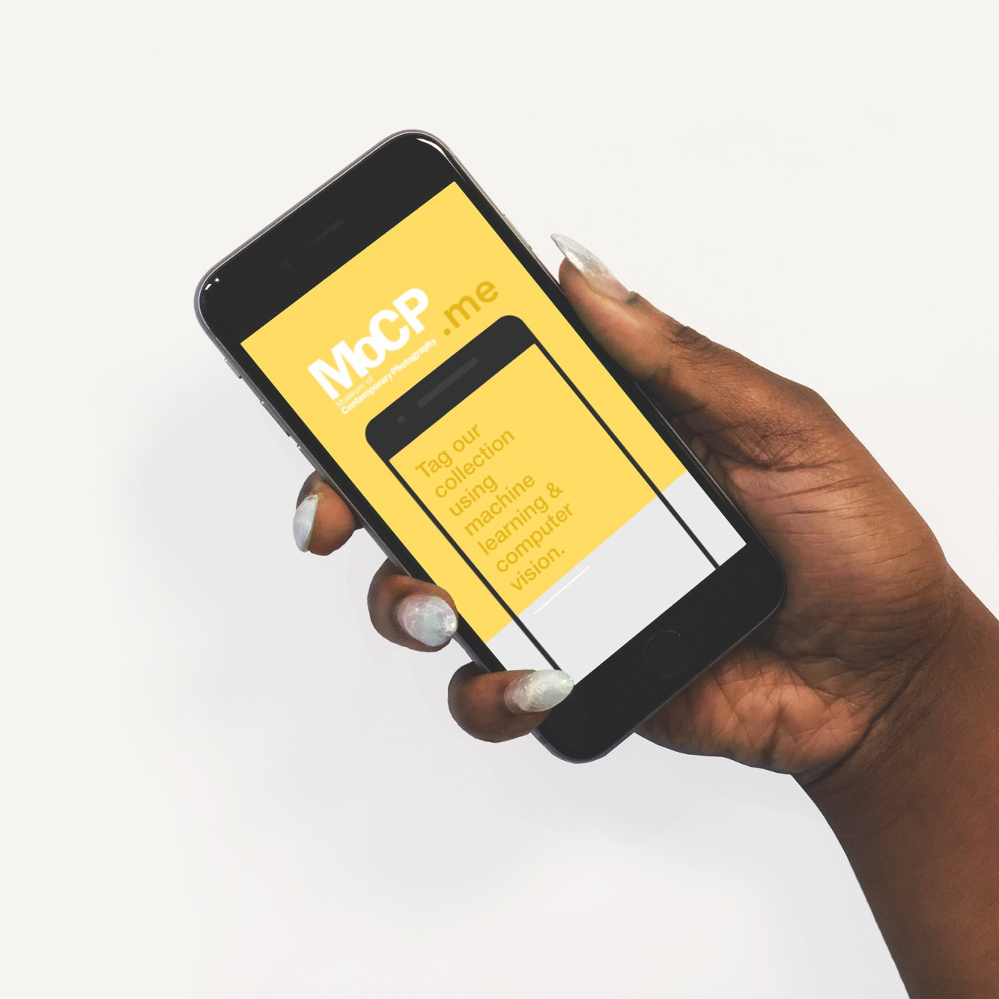

Portfolio
WHAT I HAVE DONE
I was a lead Front End (Javascript/React) Developer for Punctual, a menstruation tracking web app. This app is powered by an Express server in conjunction with Node.js. I compiled the Front End using a combination of Javascript jQuery, React.js, and Bootstrap, and assisted in establishing several Mongo databases on the Back End. I'm most proud of the algorithm I configured in the 'calendar' component to determine the specific day in a user's cycle based on a form input, and the API calls I set up in the 'food' page of the app based inputed symptoms stored in a separate component. Click to check it out, and dive into the code on my github!

MoCP.me was made in collaboration with 4 other classmates. We partnered with the Museum of Contemporary Photography in Chicago to craft a prototype application using a Google Vision API. This extension on our app is a solid bridge between front-end and back-end functionality and in this project I flexed by Back End skills to assist in using MySQL and custom Node.js applications to curate a database of the museum's photographs to run the Google Vision API against. Fun fact - I am the hand model ;) Click to check it out, and dive into the code on my github!

This is a simple little React app showcasing my basic grasp of Javascript including ajax calls, modals, and local storage techniques.
Click to check it out, and dive into the code on my github!

Here is a fun Simpsons trivia game using JavaScript for the logic and jQuery to manipulate HTML.
Click to check it out, and dive into the code on my github!
A fun and interactive game created in my bootcamp cohort that dynamically updates HTML pages with the jQuery library. to manipulate HTML.
Click to check it out, and dive into the code on my github!